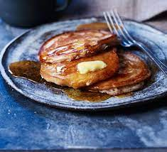

Scotch Pancakes

Description
Fluffy, sweet and filling. The BEST way to start your day!
For best results, make the batter the night before and refrigerate.
Ingredients
- 1 Large Egg
- 300ml Semi-Skimmed Milk
- 200g Plain Flour
- 1 tsp Cinnamon
- 1 tbsp Baking Powder
- 1 tbsp Caster Sugar
- Olive Oil (for cooking)
- Maple Syrup
Method
- Add the Flour, Baking Powder, Cinnamon and Sugar to a large bowl and mix together.
- Make a hole in the middle of the dry ingredients and crack the egg into the hole
- Gently beat the Egg in a circular motion into the surrounding flour. Add 100ml of
Milk once the mixture looks thick. Do this twice more until all the milk is in the mixture
and you have a smooth, silky batter.
- Heat a drizzle of Olive Oil in a large frying pan on medium-high heat.
- Once hot, lower the heat and add two ladles of batter seperately into the pan
- When you notice bubbles appearing in the batter, flip each pancake over with a
Fish Slice and heat for another 30s-1min before removing to a plate.
- Repeat the process until you have the required number of pancakes, then serve
a stack to each person, pour over the syrup and enjoy!
- Store any remaining batter in the fridge for up to 3 days.
Home